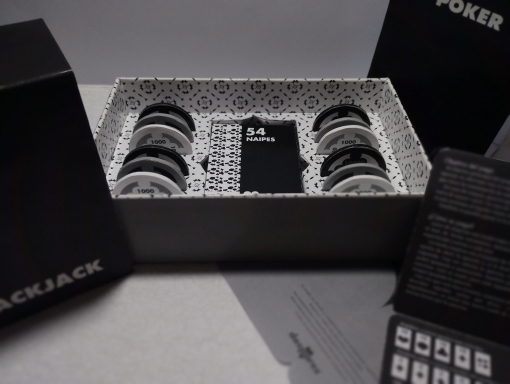
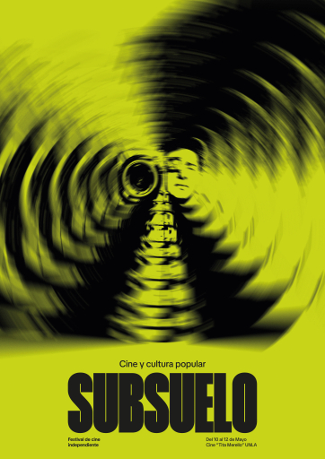
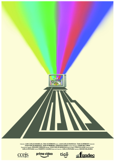
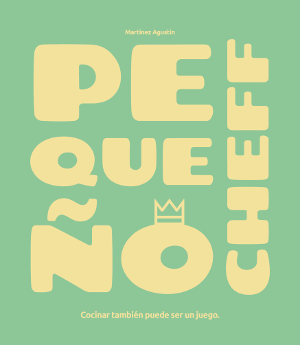
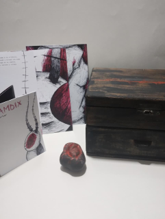
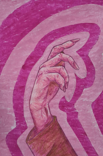

Trabajos
Un poco de lo que hice hasta ahora. Durante estos 3 años de carrera, realicé piezas gráficas variadas. Desde sistemas visuales, cartas, hasta pinturas. Entre las más destacadas, se encuentran las siguientes:
-

Dos pares
Juego de naipes
Diseño I -

Subsuelo
Festival de cine
Diseño II -

7 cajas
Afiche de película
Diseño II -

Pequeño cheff
Recetario
Espacio Tipográfico II -

Ciramdix
Bestiario
Medios Expresivos II -

Manos
Contraste de color
Medios Expresivos II